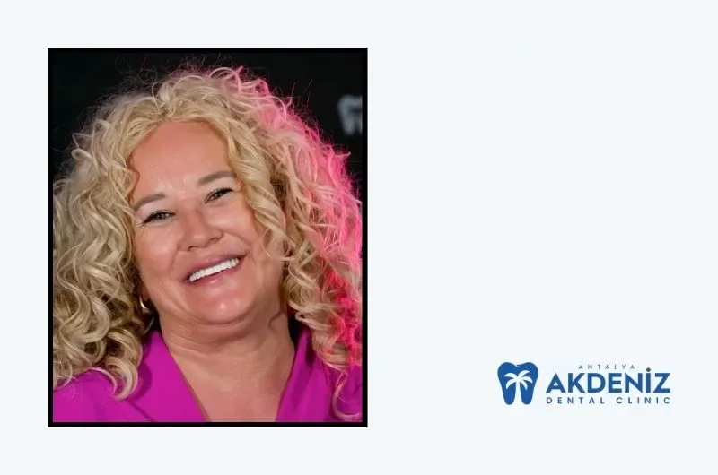

All on 4 ÎngrijireDupă tratament în Antalya, TurciaAll on 4: îngrijirea după tratament începe înainte de a pleca din Antalya, iar recuperarea nu este identică pentru toată lumea. Grefa osoasă, starea generală de sănătate și numărul de arcade tratate pot influența perioada de vindecare. Disconfortul ușor, umflătura și vânătăile sunt frecvente în stadiul inițial. Aceste simptome ar trebui să se atenueze treptat, nu să se agraveze.
Etapele recuperării după All on 4, pe scurt
| Perioada | Ce puteți observa | Principalele priorități de îngrijire |
|---|---|---|
| Primele 24 de ore | Sângerare ușoară, sensibilitate și începutul umflăturii | Odihniți-vă, protejați zonele operate și respectați instrucțiunile privind medicamentele |
| Zilele 2–3 | Umflătura poate fi mai vizibilă | Continuați îngrijirea delicată și evitați presiunea asupra punții provizorii |
| Prima săptămână | Disconfortul ar trebui să înceapă să scadă | Mențineți igiena orală conform instrucțiunilor și continuați cu alimente moi potrivite |
| Săptămânile 2–6 | Țesutul gingival continuă să se stabilizeze | Protejați puntea de mestecatul alimentelor tari și veniți la controalele programate |
| Primele 4–6 luni | Implanturile continuă să se integreze în osul maxilar | Evitați suprasolicitarea dinților provizorii și semnalați orice mobilitate sau modificare a mușcăturii |
| Etapa punții definitive | Pot fi realizate noi amprente sau scanări | Reveniți pentru evaluare după confirmarea vindecării |
Acesta este un ghid general. Etapele recuperării după All on 4 în cazul dumneavoastră pot fi diferite.
Cum trebuie îngrijite acasă implanturile All on 4?
O îngrijire bună acasă protejează țesutul gingival în curs de vindecare și reduce presiunea inutilă asupra implanturilor. Aceasta nu înseamnă curățarea agresivă a zonei operate. În stadiul inițial, o rutină delicată și consecventă este de regulă mai potrivită.
Luați medicamentele prescrise exact conform indicațiilor. Nu începeți să luați antibiotice, apă de gură antiseptică sau analgezice mai puternice fără sfatul unui specialist. Dacă aveți întrebări după ce ați plecat din Turcia, contactați clinica care v-a tratat înainte de a modifica singuri instrucțiunile.
Primele 24 de ore după All on 4 în Antalya
Evitați să scuipați în mod repetat sau să clătiți puternic, deoarece acest lucru poate deranja cheagul de sânge din jurul zonei operate.
Odihniți-vă cu capul ușor ridicat. Aplicați o compresă rece pe exteriorul feței, dacă echipa medicală v-a recomandat acest lucru. Înveliți compresa într-o cârpă curată, în loc să puneți gheața direct pe piele.
În primele 24 de ore:
- Nu atingeți zonele operate cu degetele sau cu limba.
- Evitați mâncarea și băuturile fierbinți.
- Nu folosiți paiul.
- Evitați efortul fizic intens.
- Luați doar medicamentele aprobate de medicul dentist.
- Nu fumați și nu folosiți țigări electronice.
- Nu consumați alcool.
Etapele recuperării
- Primele 24 de ore: Umflătură ușoară și sensibilitate.
- Zilele 2–3: Umflătura poate fi mai vizibilă.
- Prima săptămână: Disconfortul începe să scadă.
- Săptămânile 2–6: Gingiile continuă să se refacă.
- Primele 4–6 luni: Implanturile se integrează în osul maxilar.
Sfaturi esențiale de îngrijire
- Odihnă: Țineți capul ușor ridicat.
- Luați medicamentele: Conform prescripției.
- Alimente moi: Tăiați mâncarea în bucăți mici.
- Evitați fumatul și țigările electronice: Pot încetini vindecarea.
- Fără alcool: Cel puțin 24 de ore și pe durata tratamentului medicamentos.
- Igienă atentă: Folosiți o periuță moale și clătiri delicate.
Prima săptămână de îngrijire postoperatorie după All on 4
Umflătura devine adesea mai vizibilă în primele două sau trei zile. Apoi ar trebui să înceapă să scadă. Gura trebuie în continuare menținută curată, dar zonele operate necesită grijă.
În primele zile puteți face gargară cu apă sărată pentru a menține o bună igienă orală. Gargara prea frecventă nu va accelera recuperarea. Dimpotrivă, poate irita țesuturile. Analgezicele și antibioticele prescrise de medicul dentist trebuie luate la intervale regulate și pe durata indicată.
Procesul de vindecare după All on 4 în primele 4-6 luni
Zonele operate pentru All on 4 pot părea vindecate la exterior înainte ca implanturile să se fi integrat complet în osul maxilar. În funcție de planul de tratament și de vindecarea individuală, acest proces poate dura câteva luni și se numește osteointegrare.
Puntea provizorie vă permite să plecați din clinică cu dinți ficși, dar asta nu înseamnă că implanturile sunt pregătite pentru o masticație fără restricții. Presiunea excesivă în această etapă poate perturba vindecarea. Prin urmare, alimentele tari trebuie să rămână excluse din meniu până când echipa medicală confirmă că implanturile și puntea le pot face față.
Îngrijirea acasă a punții provizorii All on 4 – Antalya
O punte provizorie All on 4 în Antalya este concepută pentru perioada de vindecare. Este fixată, așa că nu trebuie îndepărtată acasă. Deși vă permite să vorbiți și să zâmbiți, nu este la fel de rezistentă ca puntea definitivă planificată.
Evitați să o puneți la încercare cu alimente tari sau lipicioase. Gheața, nucile, cojile tari de pâine, bomboanele tari și dulciurile gumoase pot exercita o forță concentrată asupra dinților provizorii. Tăierea alimentelor în bucăți mici face, de asemenea, mâncatul mai ușor de gestionat.
Fumatul, vapatul și durata vindecării după All on 4
Fumatul afectează vindecarea din jurul implanturilor dentare. Reduce aportul de sânge către țesuturi și este asociat cu un risc mai mare de complicații ale implanturilor. Vapatul nu este o alternativă inofensivă în timpul recuperării. Nicotina afectează în continuare circulația sângelui, iar aspirarea și căldura pot irita zonele tratate recent.
Renunțarea la fumat înainte de intervenție și abstinența pe toată durata vindecării oferă țesuturilor un mediu mai bun pentru recuperare.
Întrebări frecvente despre îngrijirea după All on 4
Cât durează recuperarea după All on 4?
Disconfortul inițial și umflătura se ameliorează adesea în primele una-două săptămâni. Totuși, integrarea dintre implanturile All on 4 și osul maxilar continuă de obicei câteva luni. Multe punți definitive sunt luate în considerare după aproximativ 4-6 luni.
De ce nu se consumă lactate după implanturile dentare?
Evitarea lactatelor nu este o regulă universală după intervenția de implant dentar. Laptele, iaurtul și alte produse lactate nu interferează automat cu vindecarea implantului. Medicul dentist vă poate totuși sfătui să evitați anumite produse pentru o scurtă perioadă. Acest lucru poate fi legat de greața după sedare, de nevoile alimentare individuale sau de instrucțiunile legate de medicație. Urmați sfaturile primite pentru tratamentul dumneavoastră, în loc să aplicați o regulă generală de tipul „fără lactate”.
Este dificilă îngrijirea implanturilor dentare All on 4?
Îngrijirea implanturilor dentare All on 4 este ușor de gestionat odată ce înțelegeți unde se acumulează placa bacteriană. Puntea nu face carii, dar placa se poate depune acolo unde aceasta se întâlnește cu gingiile și în jurul conexiunilor implanturilor.
Vă puteți face rutina de îngrijire dentară folosind o periuță cu peri moi și o periuță interdentară. Se urmează aceeași rutină ca la dinții naturali, iar curățarea și întreținerea lucrării All-on-4 din Antalya nu este dificilă.
Cât timp trebuie să așteptați înainte de a bea alcool după implanturile dentare?
Alcoolul trebuie evitat cel puțin în primele 24 de ore după tratamentul cu implanturi. Medicul dentist vă poate recomanda o perioadă mai lungă după o intervenție amplă, cum ar fi inserarea implanturilor pentru o arcadă completă.
Alcoolul poate interacționa și cu anumite antibiotice și analgezice. Nu beți alcool în timp ce luați medicamente decât dacă un medic dentist, un medic sau un farmacist a confirmat că este sigur. Abordarea mai prudentă este să așteptați până când sângerarea s-a oprit, umflătura scade și medicamentele nu mai sunt necesare.